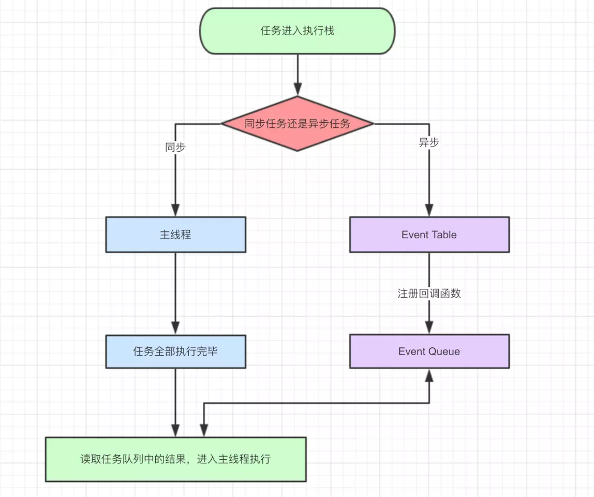

先来个小例子
结果是:start,promise,end,promise finish,{"a":"b"},timeout
如果上面的答案你都对了，说明你对块都了解了，不用看下去了
并且当你把for循环中的循环次数变大的时候，start 之后的所有console 都会延迟
关于JavaScript 是单线程语言，但是js把处理的任务分为2类，同步任务和异步任务
接下来分析一段项目中最常见的 ajax 和 setTimeout 都在的场景的 先后执行顺序
console.log('1'); setTimeout(function(){ console.log('2'); },3000); //简便起见，直接写jquery的写法 $.ajax({ url:'xxxxxxxxxx', method:'get', success:function(){ console.log('3'); } }); 这段代码是没有办法直接写出结果的，而且根据网速和后台处理结果的不同，可能结果不一致 可能是1,2,3 或者是 1,3,2 分析： 执行console.log('1'); console.log('2');这段代码进入Event Table并注册,计时开始。 ajax进入Event Table，注册回调函数success。 setTimeout执行步骤 3秒到了，计时事件timeout完成，console.log('2');进入Event Queue， console.log('2');从Event Queue进入了主线程执行 ajax执行步骤 ajax事件完成，回调函数success进入Event Queue。 主线程从Event Queue读取回调函数success并执行。 如果ajax请求时间小于3s 那么ajax 执行步骤先执行，否者 setTimeout 步骤先执行
知识点：宏任务Event Queue:setTimeout , setInterval . 微任务Event Queue:Promise与process.nextTick(callback)
来个最后大总结的例子
console.log('1'); setTimeout(function() { console.log('2'); process.nextTick(function() { console.log('3'); }) new Promise(function(resolve) { console.log('4'); resolve(); }).then(function() { console.log('5') }) }) process.nextTick(function() { console.log('6'); }) new Promise(function(resolve) { console.log('7'); resolve(); }).then(function() { console.log('8') }) setTimeout(function() { console.log('9'); process.nextTick(function() { console.log('10'); }) new Promise(function(resolve) { console.log('11'); resolve(); }).then(function() { console.log('12') }) }) 分析过程 第一轮事件循环流程分析如下： 整体script作为第一个宏任务进入主线程，遇到console.log，输出1。 遇到setTimeout，其回调函数被分发到宏任务Event Queue中。我们暂且记为setTimeout1。 遇到process.nextTick()，其回调函数被分发到微任务Event Queue中。我们记为process1。 遇到Promise，new Promise直接执行，输出7。then被分发到微任务Event Queue中。我们记为then1。 又遇到了setTimeout，其回调函数被分发到宏任务Event Queue中，我们记为setTimeout2。 第一轮事件循环宏任务结束时各Event Queue的情况，此时已经输出了1和7。 我们发现了process1和then1两个微任务。 执行process1,输出6。 执行then1，输出8。 第二轮时间循环从setTimeout1宏任务开始： 首先输出2。接下来遇到了process.nextTick()，同样将其分发到微任务Event Queue中，记为process2。new Promise立即执行输出4，then也分发到微任务Event Queue中，记为then2。 第二轮事件循环宏任务结束，我们发现有process2和then2两个微任务可以执行。 输出3。 输出5。 第二轮事件循环结束，第二轮输出2，4，3，5。 第三轮事件循环开始，此时只剩setTimeout2了，执行。 直接输出9。 将process.nextTick()分发到微任务Event Queue中。记为process3。 直接执行new Promise，输出11。 将then分发到微任务Event Queue中，记为then3。 第三轮事件循环宏任务执行结束，执行两个微任务process3和then3。 输出10。 输出12。 第三轮事件循环结束，第三轮输出9，11，10，12。 答案：整段代码，共进行了三次事件循环，完整的输出为1，7，6，8，2，4，3，5，9，11，10，12。
原文链接:https://juejin.im/post/59e85eebf265da430d571f89